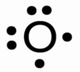
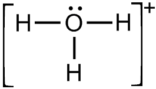
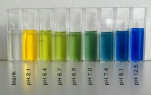

The questions below are those provided by the teacher's, under the context of questions you must be able to answer
Optics
What is light? How is it produced?
Light is a form of electromagnetic radiation. Light specifically refers to the visible portion of the spectrum, the range of wavelengths that the human eye can detect.
Light is produced from a source:
A source of light changes energy in one form (like electric or thermal energy) into light energy. We say that sources of light are luminous objects. Object that are not sources are non-luminous objects.
What is the electromagnetic spectrum?
The electromagnetic spectrum refers to the entire range of electromagnetic waves. These waves vary in frequency and wavelength, and they include a broad range of phenomena such as radio waves, microwaves, infrared radiation, visible light, ultraviolet radiation, X-rays, and gamma rays.

The laws of Reflection
The First Law of Reflection:
The incident ray, the reflected ray, and the normal to the surface all lie in the same plane.
The “incident ray” is the incoming ray of light.
The “reflected ray” is the ray of light that bounces off the reflective surface.
The “normal” is an imaginary line perpendicular to the surface at the point of incidence (where the incident ray strikes the surface).
The Second Law of Reflection:
The angle of incidence (θi) is equal to the ane of refection (θr).
Mathematically, this can be expressed as θi = θr.
Plane mirrors - SALT & ray iagrams
. Draw line parallel to Principle Line - Bounces directly back 2. Draw line where the Principle Line intercepts with the mirror - law of reflection 3. Meet’s on virtual side of mirror

In a plane mirror its always: S - Same A - Upright L - Behind mirror, same distance T - Virtual
Characteristics of images – SALT for mirrors (plane, concave & convex)
S - Size (Larger, Same, Smaller) A - Attitude (Upright, Inverted) L - Location (Which side/distance) T - Type (Real, Virtual)
Plane
S - Same A - Upright L - Behind mirror, same distance T - Virtual
Concave


Convex

Terminolog aociated th ray iagrams and concave and convex mirrors
-
- Principal Axis: The imaginary line that passes through the center of curvature (C) and the vertex (V) of a mirror.
-
Center of Curvature (C): The point on the principal axis that is at a distance equal to the radius of curvature from the vertex. For concave mirrors, C is in front of the mirror; for convex mirrors, C is behind the mirror.
-
Vertex (V): The point where the principal axis intersects the mirror surface.
-
Focal Point (F): The point on the principal axis where parallel rays either converge (concave mirror) or appear to diverge from (convex mirror) after reflection.
-
Focal Length (f): The distance between the focal point (F) and the vertex (V) of the mirror.
-
Rays of Light:
- Incident Ray: The incoming ray of light that strikes the mirror.
- Reflected Ray: The ray that bounces off the mirror surface after reflection.
- Normal Line: The imaginary line perpendicular to the mirror surface at the point of incidence. It helps in measuring angles.
-
Mirror Equation: The equation relating the object distance (u), image distance (v), and focal length (f) for mirrors. It is given by
-
Magniication m): The ratio of the height of the image to the height of the object. It can be calculated using the formula
-
Real Image: Formed when reflected rays actually converge, and the image can be projected onto a screen.
-
Virtual Image: Formed when reflected rays appear to diverge but do not actually converge. A virtual image cannot be projected onto a screen.
-
Concave Mirror:
Concave Reflecting Surface: The inner, curved surface of the mirror. Converging Mirror: A concave mirror that brings parallel rays of light together after reflection.
-
Convex Mirror:
Convex Reflecting Surface: The outer, curved surface of the mirror. Diverging Mirror: A convex mirror that makes parallel rays of light appear to diverge after reflection.
How to locate an mae on a concave n convex mirror drawing proper ray diagram
Concave
- Line parallel to principle axis, reflecting through focal point
- Line through focal point reflecting parallel to principle axis
Convex
- Line parallel to principle axis, reflecting through focal point (continue virtually with reflected ray)
- Line through focal point reflecting parallel to principle axis (continue virtually with reflected ray)
What is refraction plain ho it occur
efraction is a phenomenon that occurs when light waves pass from one medium into another with a different optical density, causing a change in the direction of the light.
When light enters a medium with a different refractive index, its speed changes, causing the change in direction. If the second medium has a higher refractive index, the light bends towards the normal (the imaginary line perpendicular to the surface at the point of incidence). If the second medium has a lower refractive index, the light bends away from the normal.
Rules of refraction
-
First Rule (Snell’s Law):
- Snell’s Law describes the relationship between the angles of incidence and refraction and the refractive indices of the two media.
- It is mathematically expressed as:
- Where:
- and are the refractive indices of the first and second mediums, respectively.
- is the angle of incidence, and is the angle of refraction.
-
Second Rule (Bent toward the Normal):
- When light passes from a less dense medium to a more dense medium, it bends toward the normal (an imaginary line perpendicular to the surface at the point of incidence).
- The refracted ray is closer to the normal than the incident ray.
-
Third Rule (Bent away from the Normal):
- When light passes from a more dense medium to a less dense medium, it bends away from the normal.
- The refracted ray is farther away from the normal than the incident ray.
-
Critical Angle:
- The critical angle is the angle of incidence in a denser medium that results in an angle of refraction of 90 degrees in the less dense medium.
- When the angle of incidence exceeds the critical angle, total internal reflection occurs.
Index of refraction calculations
The index of refraction (n) is a measure of how much light slows down as it passes through a particular medium compared to its speed in a vacuum. The index of refraction is typically denoted by the symbol “n” and is calculated using the following formula:
where:
- is the index of refraction,
- is the speed of light in a vacuum (approximately 3.00×1083.00×108 meters per second),
- is the speed of light in the given medium.
In other words, the index of refraction is the ratio of the speed of light in a vacuum to the speed of light in the medium.
Lens Equation & Magnification calculations (formulas will be given)
Lens Equation: The lens equation relates the object distance (), the image distance (), and the focal length () of a lens. The lens equation is given by:
f is the focal length of the lens u is the object distance (distance from object to lens) v is the image distance (distance from image to lens)
Magnification Formula:
The magnification (m) of an optical system, including lenses, is the ratio of the height of the image () to the height of the object ().
The magnification formula is given by:
m is the magnification is the height of the image is the height of the object v is the image distance u is the object distance
Chemistry
Evidence of Chemical changes
A chemical change is when bonds form or breake. Some common way that you can tell that this has happened are:
- Precipitate
- Gas formation or bubbles
- Color change
- Temperature
- Hard to reverse
Note: Odor is just gas formation
Chemical families in the Periodic Table

Atoms and Ions & Subatomic Particles
Proton
A proton is a subatomic particle with a positive electric charge of +1. Protons and neutrons, each have masses of approximately one atomic mass unit.
symbol
Neutron
A neutron is a subatomic particle with no net electric charge and a mass slightly larger than that of a proton. Protons and neutrons constitute the nuclei of atoms.
symbol
Electron
The electron is a subatomic particle whose electric charge is -1 elementary charge.
symbol
Ionic vs. covalent compounds
Ionic
Ionic compounds are compounds composed of ions, charged particles that form when an atom (or group of atoms, in the case of polyatomic ions) gains or loses electrons. They come in pairs, with one positively charged ion and one negatively charged ion. Ionic compounds typically have one metal and one non-metal as part of the compound.
Covalent
Covalent compounds are compounds formed by sharing electrons between atoms. They typically have two or more non-metals as part of the compound.
Lewis Dot diagrams
Lewis dot diagrams are diagrams that show the valence electrons of an atom and the element symbol.
They are made by first writing the element symbol, then drawing dots around it. The number of dots is equal to the number of valence electrons.
They can also be used to show the bonding between atoms in a compound. 
Fill in all four sides, before moving on
Covalent
In covalent bonds you use a line to represent a pair of electrons.
Each line has one electron from each atom.
1 line = 2 electrons
Ionic
In ionic bonds you brackets around the element symbol and then write the charge outside the brackets.
Notice how the sodium has no dots, this is because it has lost its valence electron. The chlorine has 8 dots, this is because it has gained an electron.
Naming compounds
Multivalent elements
Multivalent elements are elements that can have more than one charge. You add a roman numeral to the end of the element name to show the charge.
Example: Iron () Oxide
Prefix system
The prefix system is used for covalent compounds. You add a prefix to the element name to show the number of atoms of that element.
Example: Carbon Dioxide
- Mono
- Di
- Tri
- Tetra
- Penta
- Hexa
- Hepta
- Octo
- Nona
- Deca
Polyatomic ions
Polyatomic ions are ions that are made up of more than one atom. They are treated as a single unit when naming compounds. Normally they end in -ate or -ite.
Acids (binary, sulfuric, carbonic, nitric, phosphoric)
Word equations
A chemical equation that is just written out in words.
Example: Hydrogen + Oxygen → Water
Skeleton Equations
A chemical equation that is written out using the element symbols. This is the first step in balancing an equation.
Example:
Law of Conservation of Mass & Balancing Equations
The law of conservation of mass states that mass in an isolated system is neither created nor destroyed by chemical reactions or physical transformations.
This means that in a chemical equation the number of atoms of each element on the left side of the equation must be equal to the number of atoms of each element on the right side of the equation.
To balance an equation you add coefficients to the elements or compounds on the left side of the equation. You can not change the subscripts.
Example: Skeleton: Balanced:
Bohr Diagrams
How many electrons fit each ring is calculate with
Types of Chemical Reactions
Synthesis
A synthesis reaction is when two or more reactants combine to form a single product.
Example:
Decomposition
A decomposition reaction is when a single reactant breaks down into two or more products.
Example:
Single Displacement
A single displacement reaction is when an element in a compound is replaced by another element.
Example:
A and C have to be the same type of element. For example, if A is a metal, C must also be a metal. If A is a non-metal, C must also be a non-metal.
Double Displacement
A double displacement reaction is when two elements in two compounds switch places.
A and C have to be the same type of element. For example, if A is a metal, C must also be a metal. If A is a non-metal, C must also be a non-metal. B and D have to be the same type of element. For example, if B is a metal, D must also be a metal. If B is a non-metal, D must also be a non-metal.
Example:
Acids and Bases
What is an acid?
An acid is a substance that produces hydrogen ions () when dissolved in water.
What is a base?
A base is a substance that produces hydroxide ions () or any ion that will take a hydrogen ion when dissolved in water.
Hydronium ion
A hydronium ion is a water molecule with an extra hydrogen ion attached to it. It is represented by .

Properties of Acids and Bases
Acids
- Include Hydrogen
- PH below 7
Bases
- Includes Hydroxide
- PH above 7
pH Scale
The pH scale is a scale that is used to measure the acidity of a substance. It ranges from 0 to 14. 0 is the most acidic, 14 is the most basic, and 7 is neutral.
Indicators to distinguish between Acids and Bases
An idicator is a substance that changes color when it comes in contact with an acid or a base. For example, litmus paper turns red when it comes in contact with an acid and blue when it comes in contact with a base.
bromothymol blue will turn yellow when it comes in contact with an acid and blue when it comes in contact with a base.

Neutralization reactions
A neutralization reaction is when an acid and a base react to form a salt and water.
Example:
Climate Change
Weather vs. Climate
Weather is the day to day conditions of the atmosphere. Climate is the average weather conditions over a long period of time.
Greenhouse Effect
The greenhouse effect is the process by which radiation from a planet’s atmosphere warms the planet’s surface to a temperature above what it would be without its atmosphere.
Greenhouse Gases (names, natural & anthropogenic sources)
Names: Carbon dioxide, Methane, Nitrous oxide, Water vapor, Ozone, Chlorofluorocarbons
Natural Sources: Volcanoes, Decomposition, Ocean release, Respiration, Wildfires
Anthropogenic Sources: Burning fossil fuels, Deforestation, Agriculture, Landfills, Industrial production
Anthropogenic: caused by humans
The Atmosphere (composition, how it works)
78% Nitrogen, 21% Oxygen, 1% Other
The atmosphere works by trapping heat from the sun. The sun emits short wave radiation, which passes through the atmosphere and is absorbed by the earth. The earth then emits long wave radiation, which is absorbed by greenhouse gases in the atmosphere. This causes the atmosphere to heat up.
Evidence for Climate Change
IDK world heating up ig
more extream weather
Feedback loops
A feedback loop is a system where the output of one step is used as the input of another step. There are two types of feedback loops, positive and negative.
Positive Feedback Loop
A positive feedback loop is a system where the output of one step is used as the input of another step, and the output of that step is used as the input of the first step. This causes the system to get more and more extreme.
Example: The ice-albedo feedback loop. As the earth heats up, ice melts. Ice is white, so it reflects a lot of light. When the ice melts, it is replaced by water, which is dark, so it absorbs a lot of light. This causes the earth to heat up more, which causes more ice to melt, which causes the earth to heat up more, and so on.
Negative Feedback Loop
A negative feedback loop is a system where the output of one step is used as the input of another step, and the output of that step is used as the input of the first step. This causes the system to get less and less extreme.
Example: The ice-albedo feedback loop. As the earth heats up, ice melts. Ice is white, so it reflects a lot of light. When the ice melts, it is replaced by water, which is dark, so it absorbs a lot of light. This causes the earth to heat up more, which causes more ice to melt, which causes the earth to heat up more, and so on.
Evidence of past climate (proxy records)
Proxy records are records that can be used to determine the climate of the past. Some examples are tree rings, ice cores, and sediment cores.
Electromagnetic spectrum
Methods of heat transfer
Conduction
Conduction is the transfer of heat through a solid object. It occurs when two objects of different temperatures are in contact with each other.
Convection
Convection is the transfer of heat through a fluid. It occurs when a fluid is heated, causing it to rise, and then cool, causing it to sink.
Radiation
Radiation is the transfer of heat through electromagnetic waves. It occurs when an object emits electromagnetic waves, which are absorbed by another object.
Taking action on climate change - what can humans do
Us as humans can do many things to help stop climate change. Some examples are: using renewable energy, using public transportation, and eating less meat. These things will help reduce the amount of greenhouse gases that we emit.
There are many things that we can do to help stop climate change. Some examples are: using renewable energy, using public transportation, and eating less meat. These things will help reduce the amount of greenhouse gases that we emit.
Renewable energy:
Solar power:
Solar power is a renewable energy source that uses the sun’s energy to generate electricity. It is a clean energy source that does not emit greenhouse gases.
Wind power:
Wind power is a renewable energy source that uses the wind’s energy to generate electricity. It is a clean energy source that does not emit greenhouse gases.
Hydro power:
Hydro power is a renewable energy source that uses the energy of moving water to generate electricity. It is a clean energy source that does not emit greenhouse gases.
Public transportation:
Public transportation is a way of getting around that uses buses, trains, and other forms of transportation that are available to the public. It is a way of getting around that does not emit greenhouse gases.
Eating less meat:
Eating less meat is a way of reducing the amount of greenhouse gases that we emit. It is a way of reducing the amount of greenhouse gases that we emit.
Biology
Cell Theory:
-
All living organisms are composed of one or more cells.
-
Cells are the basis unit of structure and organization in living organisms
-
All cells arise from preexisting cells
Animal and Cell organelles:
-
Cytoplasm: the gel inside all cells in which all of the organelles are suspended in, and it is made up of waters and other chemicals
-
Cell membrane: plasma membrane, is semi-permeable, and it allows some things to enter while not allowing others
-
Nucleus: control center of the cell, contains genetic material (DNA), and DNA contains millions of genes and wrapped around structured called chromosomes
-
Mitochondria: powerhouse of the cell, makes energy, converts glucose into ATP, does this by the process of cellular respiration
-
Endoplasmic reticulum: network of branching tubes and pocket that extends throughout the cytoplasm. Acts as a road for the transportation of cell materials, e.g fats, proteins, etc.
-
Golgi bodies: stack of membranes, located near the nucleus. Involved in the collection and processing of cell materials
-
Vesicles: a small sac surrounded by a single layer of membrane, and they contain solid or fluid materials
-
Ribosomes: small spherical structures in the cytoplasm, and is the construction site for protein synthesis
Organelles found only in plant cells:
-
Cell wall: a strong wall surrounds the cell membrane, it is rigid and porous, and provides structure and support
-
Vacuole: a large sac surrounding by a single layer of membrane, a vacuole holds water in plant cell
-
Chloroplast: sugar factories of the cell, contain green color pigments, and is made through the process of photosynthesis
Cell cycle and Mitosis:
The series of events that occur during cell division is known as the cell cycle
There are three phases to the cell cycle:
i) interphase
ii) mitosis
iii) cytokinesis
Cell cycle:
-
Interphase:
-
longest phase of the cell cycle
-
Three phases: G1, S, and G2 phases
-
G1: cell continues daily metabolic activities
-
S phase: parent cell’s DNA instructions are duplicated so that each daughter cell can receive a complete set of DNA
-
G2: the cell continues to grow and organelles of the cell duplicate
Cell division:
Mitosis(PMAT):
-
Prophase: DNA condenses into chromosomes, consisting of sister chromatids held together by a centromere, and breaks the nuclear membrane at the end of prophase.
-
Metaphase: Duplicated chromosomes line up in the cell’s equator, where the nuclear membrane dissolves. Spindle fibers move the chromosomes to the parent cell’s equator.
-
Anaphase: The centromere splits, separating sister chromatids into daughter chromosomes, which move towards the opposite ends of the parent cell through spindle fibers.
-
Telophase: The daughter chromosomes move to opposite poles, becoming thin, long, and invisible. A new nuclear membrane forms around each set, and the parent cell appears to have two nuclei.
Cytokinesis:
-
Final stage of cell division
-
Cytoplasm dividing produces two genetically identical cells
-
During the cell cycle, special proteins are used to check to ensure that cell division can continue

Cancer:
-
Cancer is a group of diseases in which cells grow and divide out of control
-
Caused by a change/mutation in the DNA part that controls the cell cycle
-
Uncontrolled growth and cell division lead to a lump of cells known as a tumor
-
Benign tumor is not cancerous, while malignant tumor is cancerous, as malignant cells interfere with other cells
-
Carcinogen: environmental factors that cause cancer
-
Apoptosis is a normal form of cell death that occurs in multicellular organisms to ensure the dividing cells stay healthy
Cancer screening methods:
-
Endoscopy:
- Use of endoscope to screen for internal cancers
-
X-ray:
-
View parts of the body such as bones and lungs
-
Can cause DNA damage due to high radiation levels
-
-
Mammogram:
- Specialized x-ray for breast tissue
-
Ultrasound imaging:
- Uses high frequency sound waves to create digital image of tissues
-
CAT/CT scan
- Takes cross section images of body parts
-
MRI:
- Uses magnetic fields to create 3D images of body parts
-
Biopsy:
-
Removal and examination of cell tissue samples
-
Methods for treating cancer:
-
Surgery:
- Physical removal of cancerous tissue
-
Chemotherapy:
-
Drugs are put into the system to stop or slow spread of cancer
-
Side effects: hair loss, nausea, and fatigue
-
-
Radiation therapy:
- Damages DNA of cancer cells
-
Biophotonics:
-
New technology where light is used to diagnose, monitor and treat living cells
-
Levels of organization:
Atom → Molecule → Organelle → Cell → Tissue → Organ → Organ system → Organism
Respiratory system organs & functions:
-
Nose:
-
Air enters through nostrils and travels through nasal cavity
-
Nasal cavity uses hair to trap and filter out foreign materials
-
-
Mouth:
-
Air that enters through the mouth travels through the oral cavity
-
Mouth does NOT use hair to filter out foreign materials
-
-
Pharynx:
-
Back region of nasal and oral cavities
-
Contains a flap called epigiottis that covers the opening of the trachea, so that food does not enter
-
Eating too fast can cause food to bypass the flap
-
-
Trachea:
-
Supported by rings of cartilage
-
Lined with epithelial cells that produce mucs, trapping dirt
-
Lined with tiny hairs called cilia that move mucus and filter dirt
-
-
Bronchi:
-
Trachea separates into two bronchi
-
Also lined with cilia
-
-
Bronchioles:
- Bronchi separate into smaller bronchioles
-
Alveoli:
-
Cluster of air sacs on the ends of bronchioles
-
Oxygen in the lungs is diffused from the alveoli into the capiliraies
-
Carbon dioxide produced by body cells is diffused from the capillaries into the alveoli and out into the lungs to be exhaled
-
-
Breathing:
- Inhalation and exhalation use the contraction and relaxation of intercostal muscles(located between ribs) and diaphragm muscles(located under lungs) to this increases and decreases lung volume, allowing air to come in and go out
Digestive system organs & functions:
Digestive tract:
-
Mouth: Food undergoes mechanical and chemical breakdown in the mouth, using teeth and tongue for physical breaks and enzymes for chemical breaks. Saliva, containing enzymes, water, and mucus, aids in easy swallowing.
-
Esophagus: The esophagus is a muscular tube connecting the mouth to the stomach, where smooth muscles contract and relax, facilitating food movement to the stomach.
-
Stomach: A muscular bag that holds food, mixes it with digestive juices, and secretes gastric juice containing enzymes, hydrochloric acid, and mucus. It breaks down food, destroys germs, and protects against heartburn.
-
Small intestine: The small intestine, a 6m long tube, completes chemical digestion and nutrient absorption, facilitated by tiny villi projections, facilitating food absorption into the bloodstream.
-
Large intestine: The large intestine, a 1.5m-long tube, absorbs water from indigestible food, stores solid waste, and houses bacteria that convert it into vitamins, ejecting it through the rectum.
Accessory organs(food does not enter):
-
Liver:
- Produces bile that helps breakdown fats
-
Gallbladder:
- Stores bile for later use
-
Pancreas:
- Produces insulin that controls blood sugar levels
Circulatory system organs & functions:
Blood:
-
Red blood cells: carry oxygen, contain hemoglobin, when hemoglobin is attached to oxygen it makes blood appear red
-
White blood cells: fight infections in the blood, less than 1% of the blood, and recognizes and destroys invading bacteria and viruses
-
Platelets: tiny cells that help with blood clotting, less than 1% of blood, they seal up opening when blood vessels break
-
Plasma: protein rich fluid that carries all the blood cells, makes up 55% of blood, 90% of it is water, the other 10% contains important substances like proteins, vitamins, nutrients, salts, and hormones, transports these around the body
Heart:
-
Heart composed of four types of tissue: cardiac muscle tissue, nerve tissue, connective tissue, and epithelial tissue.
-
Heart divided into four chambers for blood exchange.
-
Contracting cardiac muscle tissue squeezes chambers, allowing blood to exit.
-
Relaxing cardiac muscle tissue opens chambers, allowing blood to pool.
-
Regular pumping of blood throughout the body.
-
Factors like temperature, activity, stress, chemicals, and health can affect heart rate.
-
Blood vessels:
-
Arteries: carry blood away from the blood, has the thickest walls,
-
Veins: have a one way valve opening, does not have as thick walls, arteries and veins are connected by the capillaries
-
Capillaries: the smallest blood vessels with very thin walls that allow substances to diffuse in and out of blood and body cell, this is the site of diffusion, oxygen and nutrients diffuse here, and carbon dioxide and waste are also diffused back into the the blood through the capillary walls
Diagrams that you need to be able to label: Animal and Plant cell, Digestive System, Respiratory System